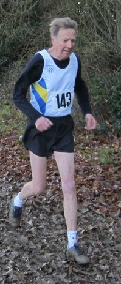

James Graham took fourteen seconds off Richard Pitcairn-Knowles' twenty-year-old M60 10-mile club best with 64:59 at the Folkestone 10 on Good Friday 25th March 2016.
(RPK replies: "Have been keeping an eye on you, Graham, but can do nothing now to halt your gradual knocking down of my SAC best times. All I can hope for is that you may be slower at 80 than my very hilly Poole 10 1:46:44 best!! Congratulations on your Folkestone 10 result. I will be watching you throughout the summer - no pressure, of course. And please don't hurry! - Richard")
James was first M60 in the race while Sally Shewell took W55 silver in the county championships. James said that it "turned out to be a lovely, if a bit breezy, day. I know three of us achieved PBs (maybe more)". Andrew Milne narrowly pipped Dan Witt for first SAC runner. The Sevenoaks AC results were:
| Place | Name | Bib No | Age Group Place | Chip Time | Gun Time | Bib Number | First Name | Last Name | Age Group Description | Gender | Team Name |
|---|---|---|---|---|---|---|---|---|---|---|---|
| 46 | Andrew Milne | 406 | 24 M 1-39 | 1:04:21 | 1:04:23 | 406 | Andrew | Milne | M Senior | M | Sevenoaks AC |
| 47 | Daniel Witt | 638 | 16 M 40-49 | 1:04:29 | 1:04:29 | 638 | Daniel | Witt | M 40 to 49 | M | Sevenoaks AC |
| 52 | James Graham | 229 | 1 M 60-99 | 1:04:59 | 1:05:01 | 229 | James | Graham | M 60+ | M | Sevenoaks AC |
| 70 | John Stevens | 551 | 7 M 50-59 | 1:06:20 | 1:06:23 | 551 | John | Stevens | M 50 to 59 | M | Sevenoaks AC |
| 84 | Chris Desmond | 141 | 13 M 50-59 | 1:07:39 | 1:07:41 | 141 | Chris | Desmond | M 50 to 59 | M | Sevenoaks AC |
| 111 | Marco Mion | 407 | 48 M 1-39 | 1:09:24 | 1:09:24 | 407 | Marco | Mion | M Senior | M | Sevenoaks AC |
| 267 | Sarah Shewell | 523 | 2 F 55-99 | 1:20:48 | 1:20:50 | 523 | Sarah | Shewell | F 55+ | F | Sevenoaks AC |
The full results are here.